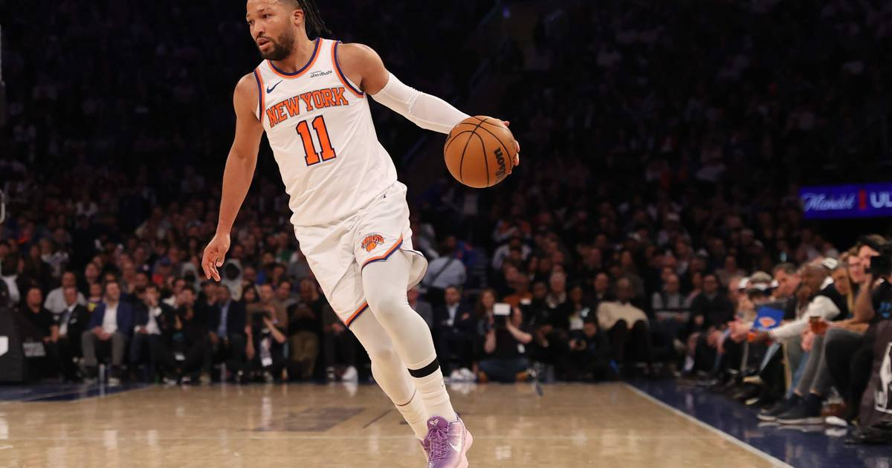

TSL Bets: Knicks -4.5 (-110) vs Cavaliers — already beat them once, and this time it's at the Garden
The Knicks beat the Cavaliers 109-97 in Cleveland on Sunday, then blew out the Bucks by 32 on Tuesday. Now the Cavs come to MSG, short-handed, against a team that has covered at home all season.

The game
Cleveland Cavaliers (5-6) at New York Knicks (6-4) — 7:00 PM ET, Madison Square Garden, ESPN
Knicks -4.5 (-110), moneyline Knicks -166, total 221.5 (DraftKings via ESPN).
Injuries — New York: Josh Hart is out (ankle). The rest of the rotation is intact.
Injuries — Cleveland: Sam Merrill is out with an elbow injury, and Jaylon Tyson is questionable with an ankle injury. Ben Tomlin, Alassane Diop and Chris Udeh are out on the bench/G League side. The Cavs are expected to start James Harden, Donovan Mitchell, Evan Mobley and Jarrett Allen — Allen is back — but the depth behind them is thin.
Storylines: The Knicks already beat this team, in Cleveland, 109-97 on Sunday. Then they came home Tuesday and blew out the Bucks 117-85. New York's home point differential this season is +12.3; Cleveland's road differential is -1.2. The Cavs have had a day off — they are the rested team — but rest does not fix a short rotation or a road record that says they do not travel well. The Knicks' offense has been humming at home, and the Garden is a tough place to steal a game when you are the underdog.
The bet
Knicks -4.5 (-110). The Knicks beat the Cavs by 12 on the road on Sunday, and now they get them at home with the same matchup problems. New York has been covering at the Garden, Cleveland is short-handed and coming off a loss, and the 4.5 is a number the Knicks can clear with a normal home performance. Take the team that already proved it can beat this opponent by double digits.
The honest caveat
This is the second night of a back-to-back for New York, and Hart is out — he is the kind of player whose absence shows up in the little things. The Cavs are rested, they have four legitimate stars in the starting five, and Harden and Mitchell are both capable of winning a game by themselves if the shots fall. If Cleveland's offense clicks and the Knicks are flat on the second night, this is a one-possession game and the spread never gets there. But the home edge and the Sunday result are real.
The pick
Knicks -4.5 (-110). A $10 ticket returns about $19.09. The Knicks already beat this team by 12 on the road — now they get them at the Garden.
If you or someone you know has a gambling problem, call 1-800-GAMBLER.
Sources
• NBA lines (DraftKings via ESPN) (betlegendpicks)
• NBA predictions, odds and picks for Nov. 11 (FanDuel)
• Cavaliers at Knicks odds, picks and predictions (USA Today Sportsbook Wire)